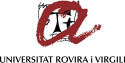

co-hosted at the University of Innsbruck and Universitat Rovira i Virgili
Organization
Universität Innsbruck (UIBK), Austria
Assoc. Prof. Sashko Ristov

Universitat Rovira i Virgili (URV), Spain
Prof. Pedro Garcia Lopez
Mentoring and Jury
Marco Cotrotzo (UIBK)
Philipp Gritsch (UIBK)
...
4 EU Projects
Bringing together four EU-funded initiatives, ranging from foundational cloud-computing frameworks to advanced Digital Twins,
MATISSE, CloudSkin, CloudStarts and NearData provide the technologies and inspiration for our two-day event.
Co-hosted on June 6 and 7 at the University of Innsbruck (UIBK) and Universitat Rovira i Virgili (URV), each campus tackles its own challenge,
then comes together in hybrid sessions so teams at both sites can watch demos and share results in real time.
Put your skills to the test, harness live cloud services and data streams,
enjoy hands-on innovation powered by Europe's top research projects,
and compete for exclusive rewards.
Agenda
June 6 (Friday)
15:00 - 15:30 Kickoff and Problem Introduction
Welcome & tools overview by Sashko and Pedro
Presentation of the EU projects and their challenges
15:30 - 18:00 Strategy Session
Teams work on approach and design
Mentoring support throughout the session
June 7 (Saturday)
09:00 - 15:00 Hack Time
Teams develop and test their solutions
Mentoring support throughout the day
MATISSE (Model-based engineering of Digital Twins for early verification and validation of Industrial Systems) is a European research project
developing a cloud-native framework to automate the engineering, federation and continuous validation of Digital Twins for industrial systems.
MATISSE comprises a consortium of over 30 partners from 7 countries and combines model-based and data-driven techniques with cloud services.
In this hands-on challenge, you'll take a VM-based EV charger simulator and turn it into a fully functional Digital Twin using AWS IoT TwinMaker, SiteWise and IoT Core. Your tasks will include:
Automating the provisioning of charger assets in the cloud,
Wiring up the virtual-to-physical data flow so your twin sends charging commands,
Embedding smart logic to coordinate multi-charger setups and cap aggregate power, and
Enhancing the twin with live energy-mix data so charging ramps up when renewables are plentiful.